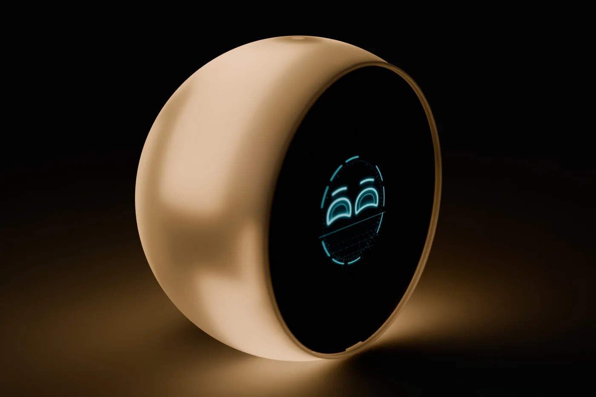

Fase de pruebas
Una pequeña serie llega a los primeros testers. Sus comentarios deciden qué aprenderá Boo. después.
Boo. quiere ser un compañero en el que se pueda confiar: con carácter, en alemán, hecho en Europa y, si quieres, funcionando por completo en tu propio servidor.
Los asistentes de voz son prácticos, pero no tienen cara. Viven en altavoces y móviles, y lo que oyen desaparece en una nube lejana.
Boo. le da la vuelta. Es un objeto que apetece tocar. Tiene una cara que muestra lo que quiere decir. Y puede pensar por completo en tu casa.

Detrás de Boo. está Andreas Pfeiffer, ingeniero de desarrollo de Baden-Wurtemberg. La electrónica, la placa, el firmware, la carcasa y la app salen de sus manos, desde el primer diseño hasta el prototipo terminado.
Desde el otoño de 2026, Boo. crece paso a paso: del montaje casero a la placa propia, de la primera palabra a unos 300 personajes.
Diseño propio, con luz ambiental.
Ojos, gestos, emociones.
Unos 300 personajes.
IA para casa.
Una pequeña serie llega a los primeros testers. Sus comentarios deciden qué aprenderá Boo. después.
Más memoria, mejor micrófono, palabra de activación y un altavoz más grande, en una carcasa para la serie.
Probado, fabricado en serie y a la venta donde compras tecnología.